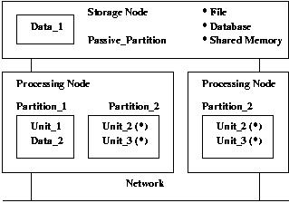
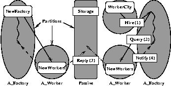
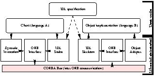

GLADE is the GNAT implementation of the Ada95 Distributed Systems Annex.
GLADE, GNAT Library for Ada Distributed Environment
GLADE Version glade-2007
Document revision level $Revision$
Date: $Date$
Copyright © 1997-2006, Free Software Foundation
Permission is granted to copy, distribute and/or modify this document under the terms of the GNU Free Documentation License, Version 1.1 or any later version published by the Free Software Foundation; with the Invariant Sections being “GNU Free Documentation License”, with the Front-Cover Texts being “GLADE User's Guide / GNAT Library for Ada Distributed Environment”, and with no Back-Cover Texts. A copy of the license is included in the section entitled “GNU Free Documentation License”.
This guide contains the following chapters:
A distributed system architecture comprises a network of computers and the software components that execute on those computers. Such architectures are commonly used to improve the performance, reliability, and reusability of complex applications. Typically, there is no shared address space available to remotely-located components (that is to say, components running on different nodes of the network), and therefore these components must communicate using some form of message-passing.
There are several programming techniques for developing distributed applications. These applications have traditionally been developed using network programming interfaces such as sockets. Programmers explicitly have to perform calls to operating system services, a task that can be tedious and error-prone. This includes initializing socket connection and determining peer location, marshaling and unmarshaling data structures, sending and receiving messages, debugging and testing several programs at the same time, and porting the application to several platforms to uncover subtle differences between various network interfaces.
Of course, this communication code can be encapsulated in wrappers to reduce its complexity, but it is clear that most of it can be automatically generated. Message passing diverts developer's attention from the application domain. The query and reply scenario is a classical scheme in distributed applications; using message passing for such a scheme can be compared to using a “goto” mechanism in a non-distributed application. This is considered unacceptable methodology in modern software engineering. A more robust design is be to use a structured approach based on procedure calls.
In some respects, network programming can be compared to the multi-threading programming issue. The user can decide to split his code into several pieces and to multiplex the thread executions himself, using a table-driven model. The scheduling code ends up embedded into the user code. This solution is error-prone and fragile in regard to any future modification. Relying on an implementation of threads such as provided in POSIX is a better solution. Relying on language primitives that support concurrency, such as Ada tasks, is best.
A middleware environment is intended to provide high level abstractions in order to easily develop user applications. Environments like CORBA or Distributed Computing Environment (DCE) provide a framework to develop client/server applications based on the Remote Procedure Call model (RPC). The RPC model is inspired from the query and reply scheme. In rough analogy with a regular procedure call, arguments are pushed onto a stream, along with some data specifying the remote procedure to be executed. The stream is transmitted over the network to the server. The server decodes the stream, performs the regular subprogram call locally, and then puts the output parameters into another stream, along with the exception (if any) raised by the subprogram execution. The server then sends this stream back to the caller. The caller decodes the stream and raises locally the exception if needed.
CORBA provides the same enhancements to the remote procedure model that object-oriented languages provide to classical procedural languages. These enhancements include encapsulation, inheritance, type checking, and exceptions. These features are offered through an Interface Definition Language (IDL).
The middleware communication framework provides all the machinery to perform, somewhat transparently, remote procedure calls or remote object method invocations. For instance, each CORBA interface communicates through an Object Request Broker (ORB). A communication subsystem such as an ORB is intended to allow applications to use objects without being aware of their underlying message-passing implementation. In addition. the user may also require a number of more complex services to develop his distributed application. Some of these services are indispensable, for example a location service that allows clients to reference remote services via higher level names, instead of a traditional scheme for addressing remote services that use Internet host addresses and communication port numbers. Other services provide domain-independent interfaces that are frequently used by distributed applications.
If we return to the multi-thread programming comparison, the middleware solution is close to what a POSIX library or a language like Esterel1 would provide for developing concurrent applications. A middleware framework like DCE is close to a POSIX library in terms of abstraction levels. Functionalities are very low-level and very complex. CORBA is closer to Esterel in terms of development process. The control part of the application can be specified in a description language. The developer then has to fill-in automatically generated source code templates (stub and skeletons) to build the computational part of the application. The distribution is a pre-compilation process and the distributed boundaries are always explicit. Using CORBA, the distributed part is written in IDL and the core of the application is written in a host language such as C++.
Rather than defining a new language like the CORBA IDL, an alternative is to extend an existing programming language with the addition of distributed features. The distributed object paradigm provides a more object-oriented approach to programming distributed systems. The notion of a distributed object is an extension to the abstract data type that allows the services provided in the type interface to be called independently of where the actual service is executed. When combined with object-oriented features such as inheritance and polymorphism, distributed objects offer a more dynamic and structured computational environment for distributed applications.
The Distributed Systems Annex (DSA) of Ada95 defines several extensions that allow the user to write a distributed system entirely in Ada. The types of distributed objects, the services they provide, and the bodies of the remote methods to be executed are all defined in conventional Ada packages. The Ada95 model is analogous the Java/RMI model. In both languages, the IDL is replaced by well-defined language constructs. Therefore, the language supports both remote procedure calls and remote object method invocations transparently, and the semantics of distribution are consistent with the rest of the language.
A program written in such a language is intended to communicate with a program written in the same language, but this apparent restriction has several useful consequences. The language can provide more powerful features because it is not constrained by the common features available in all host languages. In Ada95, the user will define a specification of remote services and implement them exactly as he would for ordinary, non-distributed services. His Ada95 environment will compile them to produce a stub file (on the caller side) and a skeleton file that automatically includes the body of the services (on the receiver side). Creating objects, obtaining or registering object references or adapting the object skeleton to the user object implementation are made transparent because the language environment has a full control on the development process.
Comparing with multi-thread programming once again, the language extension solution is equivalent to the solution adopted for tasking facilities in Ada. Writing a distributed application is as simple as writing a concurrent application: there is no binding consideration and no code to wrap. The language and its run-time system take care of most issues that would divert the programmer's attention from the application domain.
A critical feature of the Distributed Systems Annex (DSA) is that it allows the user to develop his application the same way whether this application is going to be executed as several programs on a distributed system, or as a single program on a non-distributed system. The DSA has been designed to minimize the source changes needed to convert an ordinary non-distributed program into a distributed program.
The simplest way to start with DSA is to develop the application on a non-distributed system. Of course, the design of the application should take into account the fact that some units are going to be accessed remotely. In order to write an Ada95 distributed program, it is necessary for the user to label by means of categorization pragmas some of library level compilation units of the application program. The units which require categorization are typically those that are called remotely, and those that provide the types used in remote invocations.
In order to insure that distributed execution is possible, these units are restricted to contain only a limited set of Ada constructs. For instance, if the distributed system has no shared memory, shared variables must be forbidden. To specify the nature of these restrictions, the DSA provides different categorization pragmas, each of which excludes some language constructs from the categorized package.
Of course, the user can develop the non-distributed application with his usual software engineering environment. It is critical to note that the user needs no specialized tools to develop his/her distributed application. For instance, he can debug his application with the usual debugger. Note that a non-distributed program is not to be confused with a distributed application composed of only one program. The later is built with the help of the configuration tool and includes the communication library.
Once the non-distributed version of the program is complete, it has to be configured into separate partitions, This step is surprisingly simple, compared to that of developing the application itself. The configuration step consists in mapping sets of compilation units into individual partitions, and specifying the mapping between partitions and nodes in the computer network. This mapping is specified and managed by means of GLADE.
The distributed version of the user application should work as is, but even when a program can be built both as a non-distributed or a distributed program using the same source code, there may still be differences in program execution between the distributed and non-distributed versions. These differences are discussed in subsequent sections (see Pragma Asynchronous and Pragma All_Calls_Remote).
Developing a non-distributed application in order to distribute it later is the natural approach for a novice. Of course, it is not always possible to write a distributed application as a non-distributed application. For instance, a client/server application does not belong to this category because several instances of the client can be active at the same time. It is very easy to develop such an application using GLADE; we shall describe how to do this in the following sections.
A distributed system is an interconnection of one or more processing nodes and zero or more storage nodes. A distributed program comprises one or more partitions. A partition is an aggregate of library units. Partitions communicate through shared data or RPCs. A passive partition has no thread of control. Only a passive partition can be configured on a storage node. An active partition has zero or more threads of control and has to be configured on a processing node.
The library unit is the core component of an Ada95 distributed application. The user can explicitly assign library units to a partition. Partitioning is a post-compilation process. The user identifies interface packages at compile-time. These packages are categorized using pragmas. Each of these pragmas supports the use of one of the following classical paradigms:
The remotely-called subprograms declared in a library unit categorized as remote call interface (RCI) or remote types (RT) may be either statically or dynamically bound. The partition on which a statically bound remote subprogram is executed can be determined before the call. This is a static remote subprogram call. In contrast, A remote method or a dereference of an access to remote subprogram are dynamically bound remote calls, because the partition on which the remote subprogram is executed is determined at runtime, by the actuals of the call.
In the following example, Data_1 and Data_2 are shared passive (SP) library units. Data_1 is configured on a passive partition mapped on a storage node. Partition_1 and Partition_2 are active partitions. Note that under some circumstances, a partition, for instance Partition_2, can be duplicated. To be duplicated, Unit_2 and Unit_3 which are configured on Partition_2 have to provide only dynamically bound remote subprograms. Otherwise, a partition calling a remote subprogram on Unit_2 would not be able to statically determine where to perform the remote call between the two instances of Unit_2.

Library units can be categorized according to the role they play in a distributed program. A categorization pragma is a library unit pragma that restricts the kinds of declarations that can appear in a library unit and possibly in its child units, as well as the legal semantic dependences that the categorized unit can have. There are several categorization pragmas :
The following paragraphs do not present the detailed semantics of these pragmas (formal details will be found in the Ada95 Reference Manual). Their purpose is to give the reader an intuitive overview of the purpose of these pragmas. If a library unit is not categorized, this unit is called a normal unit and plays no special role in the distributed application. Such a unit is duplicated on any partition in which it is mentioned.
A parenthetical remark: to avoid the need for specific run-time libraries for the DSA, the notion of remote rendezvous has not been introduced in Ada95: tasks cannot be invoked directly from one partition to another. Therefore, declarations of task types and general protected types with entries are not allowed in categorized Ada library units.
This pragma is not specific to the Distributed Systems Annex. A pure package can appear in the context of any package, categorized or not. A pure package is a preelaborable package that does not contain the declaration of any variable or named access type. It is particularly useful to define types, constants and subprograms shared by several categorized packages. In contrast, normal packages cannot appear in the context of categorized package declarations. Because a pure package has no state, it can be duplicated on several partitions.
Library units categorized with this pragma declare subprograms that can be called and executed remotely. An RCI unit acts as a server for remote calls. There is no memory space shared between server and clients. A subprogram call that invokes one such subprogram is a classical RPC operation; it is a statically bound operation, because the compiler can determine the identity of the subprogram being called.
Dynamically bound calls are provided through two mechanisms:
A remote access type (RAS or RACW) can be viewed as a fat pointer, that is
to say a structure with a remote address and a local address (like an URL:
<protocol>://<remote-machine>/<local-directory>). The
remote address must denote the host of the partition on which the entity has
been created; the local address describes the local memory
address within the host.
It is very unlikely that RCI units can be duplicated in the distributed system. An implementation may allow separate copies of a RCI unit as long as it ensures that the copies present a consistent state to all clients. In the general case, preserving consistency is very costly. For this reason, the implementation may require a RCI unit to be unique in the distributed system.
In the following example, a RCIBank offers several remote services: Balance, Transfer, Deposit and Withdraw. On the caller side, the bank client uses the stub files of unit RCIBank. On the receiver side, the bank receiver uses the skeleton files of unit RCIBank including the body of this package.
package Types is
pragma Pure;
type Customer_Type is new String;
type Password_Type is new String;
end Types;
with Types; use Types;
package RCIBank is
pragma Remote_Call_Interface;
function Balance
(Customer : in Customer_Type;
Password : in Password_Type)
return Integer;
procedure Transfer
(Payer : in Customer_Type;
Password : in Password_Type;
Amount : in Positive;
Payee : in Customer_Type);
procedure Deposit
(Customer : in Customer_Type;
Amount : in Positive);
procedure Withdraw
(Customer : in Customer_Type;
Password : in Password_Type;
Amount : in out Positive);
end RCIBank;
with Types; use Types;
with RCIBank; use RCIBank;
procedure RCIClient is
B : Integer;
C : Customer_Type := "rich";
P : Password_Type := "xxxx";
begin
B := Balance (C, P);
end RCIClient;
In the following example, several mirroring banks offer their services through the same database. Each bank registers a reference to each of its services with a central bank. A client of the central bank requests a service from one of the mirroring banks. To satisfy requests, the RCI unit RASBank defines Balance_Type, a remote access to subprogram (Recall that an access type declared in a remote unit has to be either remote access to subprogram or remote access to class wide type).
Note that to obtain a remote access to subprogram, the subprogram that delivers the remote access must be remote itself. Therefore, MirrorBank is a RCI library unit.
with Types; use Types;
package RASBank is
pragma Remote_Call_Interface;
type Balance_Type is access function
(Customer : in Customer_Type;
Password : in Password_Type)
return Integer;
procedure Register
(Balance : in Balance_Type);
function Get_Balance
return Balance_Type;
-- [...] Other services
end RASBank;
In the code below, a mirroring bank registers its services to the central bank.
with Types; use Types;
package MirrorBank is
pragma Remote_Call_Interface;
function Balance
(Customer : in Customer_Type;
Password : in Password_Type)
return Integer;
-- [...] Other services
end MirrorBank;
with RASBank, Types; use RASBank, Types;
package body MirrorBank is
function Balance
(Customer : in Customer_Type;
Password : in Password_Type)
return Integer is
begin
return Something;
end Balance;
begin
-- Register a dynamically bound remote subprogram (Balance)
-- through a statically bound remote subprogram (Register)
Register (Balance'Access);
-- [...] Register other services
end MirrorBank;
In the code below, a central bank client asks for a mirroring bank and calls the Balance service of this bank by dereferencing a remote access type.
with Types; use Types;
with RASBank; use RASBank;
procedure BankClient is
B : Integer;
C : Customer_Type := "rich";
P : Password_Type := "xxxx";
begin
-- Through a statically bound remote subprogram (Get_Balance), get
-- a dynamically bound remote subprogram. Dereference it to
-- perform a dynamic invocation.
B := Get_Balance.all (C, P);
end BankClient;
A bank client is now connected to a bank through a terminal. The bank wants to notify a connected client, bu means of a message on its terminal, when another client transfers a given amount of money to his account. In the following example, a terminal is designed as a distributed object. Each bank client will register its terminal object to the bank server for further use. In the code below, Term_Type is the root type of the distributed terminal hierarchy.
with Types; use Types;
package Terminal is
pragma Pure;
type Term_Type is abstract tagged limited private;
procedure Notify
(MyTerm : access Term_Type;
Payer : in Customer_Type;
Amount : in Integer) is abstract;
private
type Term_Type is abstract tagged limited null record;
end Terminal;
In the code below, the RCI unit RACWBank defines Term_Access, a remote access to class wide type. Term_Access becomes a reference to a distributed object. In the next section, we will see how to derive and extend Term_Type, how to create a distributed object and how to use a reference to it.
with Terminal, Types; use Terminal, Types;
package RACWBank is
pragma Remote_Call_Interface;
type Term_Access is access all Term_Type'Class;
procedure Register
(MyTerm : in Term_Access;
Customer : in Customer_Type;
Password : in Password_Type);
-- [...] Other services
end RACWBank;
Remote call interface units:
Unlike RCI units, library units categorized with this pragma can define distributed objects and remote methods on them. Both RCI and RT units can define a remote access type as described above (RACW). A subprogram defined in a RT unit is not a remote subprogram. Unlike RCI units, a RT unit can be duplicated on several partitions in which case all its entities are different with each other. This unit is different on each partition in which it is defined.
If we want to implement the notification feature proposed in the previous section, we have to derive Term_Type. Such a derivation is possible in a remote types unit like NewTerminal (see below). Any object of type New_Term_Type becomes a distributed object and any reference to such an object becomes a fat pointer or a reference to a distributed object (see Term_Access declaration in Remote Access to Class Wide Types (RACW)).
with Types, Terminal; use Types, Terminal;
package NewTerminal is
pragma Remote_Types;
type New_Term_Type is
new Term_Type with null record;
procedure Notify
(MyTerm : access New_Term_Type;
Payer : in Customer_Type;
Amount : in Integer);
function Current return Term_Access;
end NewTerminal;
In the code below, a client registers his name and his terminal with RACWBank. Therefore, when any payer transfers some money to him, RACWBank is able to notify the client of the transfer of funds.
with NewTerminal, RACWBank, Types; use NewTerminal, RACWBank, Types;
procedure Term1Client is
MyTerm : Term_Access := Current;
Customer : Customer_Type := "poor";
Password : Password_Type := "yyyy";
begin
Register (MyTerm, Customer, Password);
-- [...] Execute other things
end Term1Client;
In the code below, a second client, the payer, registers his terminal to the bank and executes a transfer to the first client.
with NewTerminal, RACWBank, Types; use NewTerminal, RACWBank, Types;
procedure Term2Client is
MyTerm : Term_Access := Current;
Payer : Customer_Type := "rich";
Password : Password_Type := "xxxx";
Payee : Customer_Type := "poor";
begin
Register (MyTerm, Payer, Password);
Transfer (Payer, Password, 100, Payee);
end Term2Client;
In the code below, we describe the general design of Transfer. Classical operations of Withdraw and Deposit are performed. Then, RACWBank retrieves the terminal of the payee (if present) and invokes a dispatching operation by dereferencing a distributed object Term. The reference is examined at run-time, and the execution of this operation takes place on the partition on which the distributed object resides.
with Types; use Types;
package body RACWBank is
procedure Register
(MyTerm : in Term_Access;
Customer : in Customer_Type;
Password : in Password_Type) is
begin
Insert_In_Local_Table (MyTerm, Customer);
end Register;
procedure Transfer
(Payer : in Customer_Type;
Password : in Password_Type;
Amount : in Positive;
Payee : in Customer_Type)
is
-- Find Customer terminal.
Term : Term_Access
:= Find_In_Local_Table (Payee);
begin
Withdraw (Payer, Amount);
Deposit (Payee, Amount);
if Term /= null then
-- Notify on Payee terminal.
Notify (Term, Payer, Amount);
end if;
end Transfer;
-- [...] Other services
end RACWBank;
with Ada.Streams; use Ada.Streams;
package StringArrayStream is
pragma Remote_Types;
type List is private;
procedure Append (L : access List; O : in String);
function Delete (L : access List) return String;
private
type String_Access is access String;
type Node;
type List is access Node;
type Node is record
Content : String_Access;
Next : List;
end record;
procedure Read
(S : access Root_Stream_Type'Class;
L : out List);
procedure Write
(S : access Root_Stream_Type'Class;
L : in List);
for List'Read use Read;
for List'Write use Write;
end StringArrayStream;
Non-remote access types cannot be declared in the public part of a remote types unit. However, it is possible to define private non-remote access types as long as the user provides its marshaling procedures, that is to say the mechanism needed to place a value of the type into a communication stream. The code below describes how to transmit a linked structure.
The package declaration provides a type definition of single-linked lists of unbounded strings. An implementation of the marshaling operations could be the following:
package body StringArrayStream is
procedure Read
(S : access Root_Stream_Type'Class;
L : out List) is
begin
if Boolean'Input (S) then
L := new Node;
L.Content := new String'(String'Input (S));
List'Read (S, L.Next);
else
L := null;
end if;
end Read;
procedure Write
(S : access Root_Stream_Type'Class;
L : in List) is
begin
if L = null then
Boolean'Output (S, False);
else
Boolean'Output (S, True);
String'Output (S, L.Content.all);
List'Write (S, L.Next);
end if;
end Write;
-- [...] Other services
end StringArrayStream;
Remote types units:
The entities declared in such a categorized library unit are intended to be mapped on a virtual shared address space (file, memory, database). When two partitions use such a library unit, they can communicate by reading or writing the same variable in the shared unit. This supports the conventional shared variables paradigm. Entryless protected objects can be declared in these units, to provide an atomic access to shared data, thus implementing a simple transaction mechanism. When the address space is a file or a database, the user can take advantage of the persistency features provided by these storage nodes.
In the code below, we define two kinds of shared objects. External_Synchronization requires that the different partitions updating this data synchronize to avoid conflicting operations on shared objects. Internal_Synchronization provides a way to get an atomic operation on shared objects. Note that only entry-less subprograms are allowed in a shared passive unit.
package SharedObjects is
pragma Shared_Passive;
Max : Positive := 10;
type Index_Type is range 1 .. Max;
type Rate_Type is new Float;
type Rates_Type is array (Index_Type) of Rate_Type;
External_Synchronization : Rates_Type;
protected Internal_Synchronization is
procedure Set
(Index : in Index_Type;
Rate : in Rate_Type);
procedure Get
(Index : in Index_Type;
Rate : out Rate_Type);
private
Rates : Rates_Type;
end Internal_Synchronization;
end SharedObjects;
In RT or RCI package declarations, variable declarations are forbidden, and non-remote access types are allowed as long as their marshaling subprograms are explicitly provided (see Transmitting Dynamic Structure)..
Calls are executed at most once: they are made exactly one time or they fail with an exception. When a communication error occurs, System.RPC.Communication_Error is raised.
Any exception raised in a remote method or subprogram call is propagated back to the caller. Exceptions semantics are preserved in the regular Ada way.
package Internal is
Exc : exception;
end Internal;
package RemPkg2 is
pragma Remote_Call_Interface;
procedure Subprogram;
end RemPkg2;
package RemPkg1 is
pragma Remote_Call_Interface;
procedure Subprogram;
end RemPkg1;
Let us say that RemPkg2, Internal and RemExcMain packages are on the same partition Partition_1 and that RemPkg1 is on partition Partition_2.
with RemPkg1, Ada.Exceptions; use Ada.Exceptions;
package body RemPkg2 is
procedure Subprogram is
begin
RemPkg1.Subprogram;
exception when E : others =>
Raise_Exception (Exception_Identity (E), Exception_Message (E));
end Subprogram;
end RemPkg2;
with Internal, Ada.Exceptions; use Ada.Exceptions;
package body RemPkg1 is
procedure Subprogram is
begin
Raise_Exception (Internal.Exc'Identity, "Message");
end Subprogram;
end RemPkg1;
with Ada.Text_IO, Ada.Exceptions; use Ada.Text_IO, Ada.Exceptions;
with RemPkg2, Internal;
procedure RemExcMain is
begin
RemPkg2.Subprogram;
exception when E : Internal.Exc =>
Put_Line (Exception_Message (E)); -- Output "Message"
end RemExcMain;
When RemPkg1.Subprogram on Partition_1 raises Internal.Exc, this exception is propagated back to Partition_2. As Internal.Exc is not defined on Partition_2, it is not possible to catch this exception without an exception handler when others. When this exception is reraised in RemPkg1.Subprogram, it is propagated to Partition_1. But this time, Internal.Exc is visible and can be handled as we would in a single-partition Ada program. Of course, the exception message is also preserved.
By default, a remote call is blocking: the caller waits until the remote call is complete and the output stream is received. By contrast. a remote subprogram labeled with pragma Asynchronous allows statically and dynamically bound remote calls to it to be executed asynchronously. A call to an asynchronous procedure doesn't wait for the completion of the remote call, and lets the caller continue its execution. The remote procedure must have only in parameters, and any exception raised during the execution of the remote procedure is lost.
When pragma Asynchronous applies to a regular subprogram with in parameters, any call to this subprogram will be executed asynchronously. The following declaration of AsynchronousRCI.Asynchronous gives an example.
package AsynchronousRCI is
pragma Remote_Call_Interface;
procedure Asynchronous (X : Integer);
pragma Asynchronous (Asynchronous);
procedure Synchronous (X : Integer);
type AsynchronousRAS is access procedure (X : Integer);
pragma Asynchronous (AsynchronousRAS);
end AsynchronousRCI;
package AsynchronousRT is
pragma Remote_Types;
type Object is tagged limited private;
type AsynchronousRACW is access all Object'Class;
pragma Asynchronous (AsynchronousRACW);
procedure Asynchronous (X : Object);
procedure Synchronous (X : in out Object);
function Create return AsynchronousRACW;
private
type Object is tagged limited null record;
end AsynchronousRT;
A pragma Asynchronous applies to a Remote Access_to_Subprogram (RAS). An asynchronous RAS can be both asynchronous and synchronous depending on the designated subprogram. For instance, in the code below, remote call (1) is asynchronous but remote call (2) is synchronous.
A pragma Asynchronous applies to a RACW as well. In this case, the invocation of any method with in parameters is always performed asynchronously. Remote method invocation (3) is asynchronous but remote method invocation (4) is synchronous.
with AsynchronousRCI, AsynchronousRT;
use AsynchronousRCI, AsynchronousRT;
procedure AsynchronousMain is
RAS : AsynchronousRAS;
RACW : AsynchronousRACW := Create;
begin
-- Asynchronous Dynamically Bound Remote Call (1)
RAS := AsynchronousRCI.Asynchronous'Access;
RAS (0); -- Abbrev for RAS.all (0)
-- Synchronous Dynamically Bound Remote Call (2)
RAS := AsynchronousRCI.Synchronous'Access;
RAS (0);
-- Asynchronous Dynamically Bound Remote Call (3)
Asynchronous (RACW.all);
-- Synchronous Dynamically Bound Remote Call (4)
Synchronous (RACW.all);
end AsynchronousMain;
This feature supports the conventional message passing paradigm. The user must be aware that this paradigm, and asynchronous remote calls in particular, has several drawbacks:
To illustrate the latter, let us take the following example:
package Node2 is
pragma Remote_Call_Interface;
procedure Send (X : Integer);
pragma Asynchronous (Send);
end Node2;
package body Node2 is
V : Integer := 0;
procedure Send (X : Integer) is
begin
V := X;
end Send;
end Node2;
package Node1 is
pragma Remote_Call_Interface;
procedure Send (X : Integer);
pragma Asynchronous (Send);
end Node1;
with Node2;
package body Node1 is
procedure Send (X : Integer) is
begin
Node2.Send (X);
end Send;
end Node1;
with Node1, Node2;
procedure NonDeterministic is
begin
Node1.Send (1);
Node2.Send (2);
end NonDeterministic;
Let us say that Main is configured on Partition_0, Node1 on Partition_1 and Node2 on Partition_2. If Node1.Send and Node2.Send procedures were synchronous or if no latency was introduced during network communication, we would have the following RPC order: Main remotely calls Node1.Send which remotely calls Node2.Send which sets V to 1. Then, Main remotely calls Node2.Send and sets V to 2.
Now, let us assume that both Send procedures are asynchronous and that the connection between Partition_1 and Partition_2 is very slow. The following scenario can very well occur. Main remotely calls Node1.Send and is unblocked. Immediately after this call, Main remotely calls Node2.Send and sets V to 2. Once this is done, the remote call to Node1.Send completes on Partition_1 and it remotely calls Node2.Send which sets V to 1.
A pragma All_Calls_Remote in a RCI unit forces remote procedure calls to be routed through the communication subsystem even for a local call. This eases the debugging of an application in a non-distributed situation that is very close to the distributed one, because the communication subsystem (including marshaling and unmarshaling procedures) can be exercised on a single node.
In some circumstances, a non-distributed application can behave differently than an application distributed on only one partition. This can happen when both All_Calls_Remote and Asynchronous features are used at the same time (see Pragma Asynchronous for an example). Another circumstance occur when the marshaling operations raise an exception. In the following example, when unit ACRRCI is a All_Calls_Remote package, the program raises Program_Error. When unit ACRRCI is no longer a All_Calls_Remote package, then the program completes silently.
with Ada.Streams; use Ada.Streams;
package ACRRT is
pragma Remote_Types;
type T is private;
private
type T is new Integer;
procedure Read
(S : access Root_Stream_Type'Class;
X : out T);
procedure Write
(S : access Root_Stream_Type'Class;
X : in T);
for T'Read use Read;
for T'Write use Write;
end ACRRT;
package body ACRRT is
procedure Read
(S : access Root_Stream_Type'Class;
X : out T) is
begin
raise Program_Error;
end Read;
procedure Write
(S : access Root_Stream_Type'Class;
X : in T) is
begin
raise Program_Error;
end Write;
end ACRRT;
with ACRRT; use ACRRT;
package ACRRCI is
pragma Remote_Call_Interface;
pragma All_Calls_Remote;
procedure P (X : T);
end ACRRCI;
package body ACRRCI is
procedure P (X : T) is
begin
null;
end P;
end ACRRCI;
with ACRRCI, ACRRT;
procedure ACRMain is
X : ACRRT.T;
begin
ACRRCI.P (X);
end ACRMain;
generic
package GenericRCI is
pragma Remote_Call_Interface;
procedure P;
end GenericRCI;
with GenericRCI;
package RCIInstantiation is new GenericRCI;
pragma Remote_Call_Interface (RCIInstantiation);
with GenericRCI;
package NormalInstantiation is new GenericRCI;
Any of these categorized units can be generic. Instances do not automatically inherit the categorization of their generic units, and they can be categorized explicitly, If they are not, instances are normal compilation units. Like any other categorized unit, a categorized instance must be at the library level, and regular restrictions of categorized units apply on instantiation (in particular on generic formal parameters).
Each categorization pragma has very specific visibility rules. As a general rule, RCI > RT > SP > Pure, where the comparison indicates allowed semantic dependencies. This means that a Remote_Types package can make visible in its specification only Remote_Types, Shared_Passive and Pure units.
The Partition Communication Subsystem (PCS) is the runtime library for distributed features. It marshals and unmarshals client and server requests into a data stream suitable for network transmission.
type Params_Stream_Type
(Initial_Size : Ada.Streams.Stream_Element_Count) is new
Ada.Streams.Root_Stream_Type with private;
This type is a container for the data to be transmitted between partitions. Its root is Root_Stream_Type, which defines the basic stream type and two abstract operations, Write and Read. Its purpose is to insert / remove objects of type Stream_Element_Array which are array of bytes representing a particular data.
Streams are read and written using four attributes:
An Ada compiler provides default 'Read and 'Write operations. But it is up to the implementation of the PCS to provide default 'Read and 'Write to ensure proper operation between heterogeneous architectures (see Heterogeneous System).
The user can overload these operations, except for predefined types. Overloading with a textual version provides the user with a way to debug its application (even outside of the Distributed Systems Annex).
with Ada.Streams; use Ada.Streams;
package New_Integers is
pragma Pure;
type New_Integer is new Integer;
procedure Read
(S : access Root_Stream_Type'Class;
V : out New_Integer);
procedure Write
(S : access Root_Stream_Type'Class;
V : in New_Integer);
for New_Integer'Read use Read;
for New_Integer'Write use Write;
end New_Integers;
package body New_Integers is
procedure Read
(S : access Root_Stream_Type'Class;
V : out New_Integer)
is
B : String := String'Input (S);
begin
V := New_Integer'Value (B);
end Read;
procedure Write
(S : access Root_Stream_Type'Class;
V : in New_Integer)
is
begin
String'Output (S, New_Integer'Image (V));
end Write;
end New_Integers;
The language forces the user to provide read and write operations for non-remote access types. Transmitting an access value by dumping its content into a stream makes no sense when it is going to be transmitted to another partition (different memory spaces). To transmit non-remote access types see Transmitting Dynamic Structure.
When a remote subprogram takes a class wide argument, there is a risk of using an object of a derived type that will not be clean enough to be transmitted. For example, given a type called Root_Type, if a remote procedure takes a Root_Type'Class as an argument, the user can call it with an instance of Derived_Type that is Root_Type enriched with a field of a task type. This will lead to a non-communicable type to be transmitted between partitions.
To prevent this, paragraph E.4(18) of the reference manual explains that any actual type used as parameter for a remote call whose formal type is a class wide type must be declared in the visible part of a Pure or Remote_Types package. This property also holds for remote functions returning class wide types. To summarize, the actual type used should have been eligible for being declared where the root type has been declared. If a `bad' object is given to a remote subprogram, Program_Error will be raised at the point of the call.
U'Partition_ID identifies the partition where the unit U has been elaborated. For this purpose, the PCS provides an integer type Partition_ID to uniquely designate a partition. Note that a Partition_ID is represented as a universal integer, and has no meaning outside of the PCS. The RM requires that two partitions of a distributed program have different Partition_ID's at a given time. A Partition_ID may or may not be assigned statically (at compile or link time). A Partition_ID may or may not be related to the physical location of the partition.
Partition_ID's can be used to check whether a RCI package is configured locally.
with RCI;
with Ada.Text_IO;
procedure Check_PID is
begin
if RCI'Partition_ID = Check_PID'Partition_ID then
Ada.Text_IO.Put_Line ("package RCI is configured locally");
else
Ada.Text_IO.Put_Line ("package RCI is configured remotely");
end if;
end Check_PID;
It is not defined by the PCS specification whether one or more threads of control should be available to process incoming messages and to wait for their completion. But the PCS implementation is required to be reentrant, thereby allowing concurrent calls on it to service concurrent remote subprogram calls into the server partition. This means that at the implementation level the PCS manages a pool of helper tasks. This (apart from performance) is invisible to the user.
A library unit is consistent if the same version of its declaration is used in all units that reference it. This requirement applies as well to a unit that is referenced in several partitions of a distributed program. If a shared passive or RCI library unit U is included in some partition P, It is a bounded error to elaborate another partition P1 of a distributed program that that depends on a different version of U. As a result of this error, Program_Error can be raised in one or both partitions during elaboration.
U'Version yields a string that identifies the version of the unit declaration and any unit declaration on which it depends. U'Version_Body yields a string that identifies the version of the unit body. These attributes are used by the PCS to verify the consistency of an application.
After elaborating the library units, but prior to invoking the main subprogram, the PCS checks the RCI unit versions, and then accept any incoming RPC. To guarantee that it is safe to call receiving stubs, any incoming RPC is kept pending until the partition completes its elaboration.
If a construct containing a remote call is aborted, the remote subprogram call is cancelled. Whether the execution of the remote subprogram is immediately aborted as a result of the cancellation is implementation defined.
An active partition terminates when its environment task terminates. In other terms, a partition cannot terminate before the Ada program itself terminates. The standard termination mechanism applies, but can be extended with extra rules (see Partition Attribute Termination for examples).
The example shown on the following figure highlights most of the features of DSA. The system is based on a set of factories and workers and a storage. Each entity is a partition itself. A factory hires a worker from a pool of workers (hire - 1) and assigns a job (query - 2) to him. The worker performs the job and saves the result (reply - 3) in a storage common to all the factories. The worker notifies the factory of the end of his job (notify - 4).

When a worker has completed his job, the result must be saved in a common storage. To do this, we define a protected area in SP package Storage (see following code). An entry-less protected object ensures atomic access to this area.
package Storage is
pragma Shared_Passive;
protected Queue is
procedure Insert (Q, R : Integer);
procedure Remove
(Q : in Integer;
R : out Integer);
private
-- Other declarations
end Queue;
end Storage;
Common is a Remote_Types package that defines most of the remote services of the above system (see following code). First, we define a way for the workers to signal the completion of his job. This callback mechanism is implemented using RAS Notify.
with Storage; use Storage;
package Common is
pragma Remote_Types;
type Notify is
access procedure (Q : Integer);
pragma Asynchronous (Notify);
type Worker is
abstract tagged limited private;
procedure Assign
(W : access Worker;
Q : in Integer;
N : in Notify) is abstract;
type Any_Worker is
access all Worker'Class;
pragma Asynchronous (Any_Worker);
private
type Worker is abstract tagged limited null record;
end Common;
We define an abstract tagged type Worker which is intended to be the root type of the whole distributed objects hierarchy. Assign allows a factory to specify a job to a worker and a way for the worker to signal its employer the completion of this job. Any_Worker is a remote access to class wide type (RACW). In other words, it is a reference to a distributed object of any derived type from Worker class. Note that the two remote access types (Any_Worker and Notify) are declared as asynchronous. Therefore, any override of Assign will be executed asynchronously. To be asynchronous, an object of type Notify has to be a reference to an asynchronous procedure.
NewWorker is derived from type Worker and Assign is overridden.
with Common, Storage; use Common, Storage;
package NewWorkers is
pragma Remote_Types;
type NewWorker is new Worker with private;
procedure Assign
(W : access NewWorker;
Q : Integer;
N : Notify);
private
type NewWorker is new Worker with record
NewField : Field_Type; -- [...] Other fields
end record;
end NewWorkers;
The following code shows how to derive a second generation of workers NewNewWorker from the first generation NewWorker. As mentioned above, this RT package can be duplicated on several partitions to produce several types of workers and also several remote workers.
with Common, Storage, NewWorkers; use Common, Storage, NewWorkers;
package NewNewWorkers is
pragma Remote_Types;
type NewNewWorker is new NewWorker with private;
procedure Assign
(W : access NewNewWorker;
Q : Integer;
N : Notify);
private
type NewNewWorker is new NewWorker with record
NewField : Field_Type; -- [...] Other fields
end record;
end NewNewWorkers;
In the following code, we define a unique place where workers wait for jobs. WorkerCity is a Remote_Call_Interface package with services to hire and free workers. Unlike Remote_Types packages, Remote_Call_Interface packages cannot be duplicated, and are assigned to one specific partition.
with Common; use Common;
package WorkerCity is
pragma Remote_Call_Interface;
procedure Insert (W : in Any_Worker);
procedure Remove (W : out Any_Worker);
end WorkerCity;
In order to use even more DSA features, Factory is defined as a generic RCI package (see sample above). Any instantiation defines a new factory (see sample above). To be RCI, this instantiation has to be categorized once again.
with Storage; use Storage;
generic
package Factory is
pragma Remote_Call_Interface;
procedure Notify (Q : Integer);
pragma Asynchronous (Notify);
end Factory;
with Factory;
package NewFactory is new Factory;
pragma Remote_Call_Interface (NewFactory);
This chapter describes the usual ways of using GLADE to compile Ada distributed programs.
An Ada 95 distributed application comprises a number of partitions which can be executed concurrently on the same machine or, and this is the interesting part, can be distributed on a network of machines. The way in which partitions communicate is described in Annex E of the Ada 95 reference manual.
A partition is a set of compilation units that are linked together to produce an executable binary. A distributed program comprises two or more communicating partitions.
The Distributed Systems Annex (DSA) does not describe how a distributed application should be configured. It is up to the user to define what are the partitions in his program and on which machines they should be executed.
The tool gnatdist and its configuration language allows the user to partition his program and to specify the machines on which the individual partitions are to execute.
gnatdist reads a configuration file (whose syntax is described in section The Configuration Language) and builds several executables, one for each partition. It also takes care of launching the different partitions (default) with parameters that can be specific to each partition.
gnatdist [switches] configuration-file [list-of-partitions]
The switches of gnatdist are, for the time being, exactly the same as those of gnatmake, with the addition of –PCS, which allows the user to override the default selection of distribution runtime library (PCS). By default gnatdist outputs a configuration report and the actions performed. The switch -n allows gnatdist to skip the first stage of recompilation of the non-distributed application.
The names of all configuration files must have the suffix .cfg. There may be several configuration files for the same distributed application, as the user may want to use different distributed configurations depending on load and other characteristics of the computing environment.
If a list of partitions is provided on the command line of the gnatdist command, only these partitions will be built. In the following configuration example, the user can type :
gnatdist <configuration> <partition_2> <partition_3>
Here is what goes on behind the scenes in gnatdist when building a distributed application:
The configuration language is Ada-like. As the capabilities of GLADE will evolve, so will this configuration language. Most of the attributes and pragmas can be overloaded at run-time by command line arguments or environment variables.
All the Ada keywords are reserved keywords of the GLADE configuration language. gnatdist generates full Ada code in order to build the different executables. To avoid naming conflicts between Ada and GLADE configuration language, all the Ada keywords have been reserved even if they are not used in the configuration language.
There are three new keywords:
It is possible to modify the default behavior of the configuration via a pragma definition.
PRAGMA ::=
pragma PRAGMA_NAME [(PRAGMA_ARGUMENTS)];
It is also possible to modify the default behavior of all the partitions (or channels) via an attribute definition clause applied to the predefined type Partition (or Channel).
REPRESENTATION_CLAUSE ::=
for Partition'ATTRIBUTE_NAME use ATTRIBUTE_ARGUMENTS;
| for Channel'ATTRIBUTE_NAME use ATTRIBUTE_ARGUMENTS;
It is also possible to modify the default behavior of a given partition (or channel) via an attribute definition clause applied to the partition (or channel) itself.
REPRESENTATION_CLAUSE ::=
for PARTITION_IDENTIFIER'ATTRIBUTE_NAME use ATTRIBUTE_ARGUMENTS;
When an attribute definition clause is applied to a given object of a predefined type, this overrides any attribute definition of the predefined type. In the next sections, attributes apply to a given object rather than to the predefined type.
The distribution of one or several Ada programs is described by a single configuration unit. This configuration unit has a specification part and an optional body part. A configuration unit is declared as an Ada procedure would be. The keyword configuration is reserved for this purpose.
CONFIGURATION_UNIT ::=
configuration IDENTIFIER is
DECLARATIVE_PART
[begin
SEQUENCE_OF_STATEMENTS]
end [IDENTIFIER];
In the declarative part, the user declares his partitions and can change their default behavior. gnatdist provides a predefined type Partition. The user can declare a list of partitions and can also initialize these partitions with an initial list of Ada units.
DECLARATIVE_PART ::= {DECLARATIVE_ITEM}
DECLARATIVE_ITEM ::=
PARTITION_DECLARATION
| CHANNEL_DECLARATION
| REPRESENTATION_CLAUSE
| SUBPROGRAM_DECLARATION
| PRAGMA
SUBPROGRAM_DECLARATION ::=
MAIN_PROCEDURE_DECLARATION
| PROCEDURE_DECLARATION
| FUNCTION_DECLARATION
PARTITION_DECLARATION ::=
DEFINING_IDENTIFIER_LIST : Partition
[:= ENUMERATION_OF_ADA_UNITS];
DEFINING_IDENTIFIER_LIST ::=
DEFINING_IDENTIFIER {, DEFINING_IDENTIFIER}
STATEMENT ::=
IDENTIFIER := ENUMERATION_OF_ADA_UNITS;
SEQUENCE_OF_STATEMENTS ::=
STATEMENT {STATEMENT}
Once declared, a partition is an empty list of Ada units. The operator ":=" adds the Ada units list on the right side to the current list of Ada units that are already mapped to the partition. This is a non-destructive operation. Whether a unit is a relevant Ada unit or not is checked later on by the back-end of gnatdist. These assignments can occur in the declarative part as well as in the body part.
ENUMERATION_OF_ADA_UNITS ::= ({ADA_UNIT {, ADA_UNIT}});
There are several kinds of location in the GLADE configuration language. We shall present them in the next subsections, but here is a short overview of these locations:
A location is composed of a support name and a specific data for this support. For instance, a network location is composed of a protocol name like tcp and a protocol data like <machine>:<port>. A storage location is composed of a storage support name like dfs (for Distributed File System) and a storage support data like a directory /dfs/glade.
LOCATION ::= ([Support_Name =>] STRING_LITERAL,
[Support_Data =>] STRING_LITERAL)
LOCATION_LIST ::= (LOCATION [,LOCATION)])
Note that a location may have an undefined or incomplete support data. In this case, the support is free to compute a support data. For instance, ("tcp", "") specifies that the protocol is used but that the protocol data <machine>:<port> is to be determined by the protocol itself.
A location or a list of locations can be can be concatenated into a single string to be used as a command line option or an environment variable (see Partition Command Line Options).
If a partition wants to communicate with another partition once the location list of the latter is known, the caller will use the first location of the callee whose protocol is locally available. For instance, if a callee exports three locations ("N1", "D1"), ("N2", "D2") and ("N3", "D3"), a caller with protocols N2 and N3 locally available will try to communicate with the callee using the protocol of name N2 and of specific data D2.
Basically, the distributed system annex (DSA) helps the user in building a distributed application from a non-distributed application (Of course, this is not the only possible model offered by DSA). The user can design, implement and test his application in a non-distributed environment, and then should be able to switch from the non-distributed case to a distributed case. As mentioned before, this two-phase design approach has several advantages.
In a non-distributed case, the user executes only one main executable possibly with a name corresponding to the main unit name of his application. With gnatdist, in a distributed case, a main executable with a name corresponding to the main unit name is responsible for starting the entire distributed application. Therefore, the user can start his application the same way he used to do in the non-distributed case.
For this reason, the configuration language provides a way to declare the main procedure of the non-distributed application.
MAIN_PROCEDURE_DECLARATION ::=
procedure MAIN_PROCEDURE_IDENTIFIER is in PARTITION_IDENTIFIER;
In this case, the partition in which the main procedure has been mapped is called the main partition. It includes in its code a call to this main procedure. The main partition has an additional specific role, because the boot server is located on it (see GLADE Internals).
The main procedures for the other partitions have a null body. However, the user can also modify this behavior by providing an alternate main procedure. To do this, an alternate main subprogram has to be declared and assigned to the partition Main attribute.
PROCEDURE_DECLARATION ::=
procedure PROCEDURE_IDENTIFIER;
REPRESENTATION_CLAUSE :=
for PARTITION_IDENTIFIER'Main use PROCEDURE_IDENTIFIER;
As a default, the main executable is a full Ada starter procedure. That means that it launches all the other partitions from an Ada program. The pragma Starter allows the user to ask for one starter or another. When the partition host is not statically defined (see Partition Attribute Host), the starter subprogram will ask for it interactively when it is executed.
CONVENTION_LITERAL ::= Ada |
Shell |
None
PRAGMA ::=
pragma Starter ([Convention =>] CONVENTION_LITERAL);
When pragma Starter is Ada or Shell, the main partition launches the other partitions. The remote shell used as a default is determined during GLADE configuration and installation. It is either rsh, remsh or the argument passed to –with-rshcmd=[ARG]. The pragma Remote_Shell allows the user to override the default.
PRAGMA ::=
pragma Remote_Shell
([Command =>] STRING_LITERAL,
[Options =>] STRING_LITERAL);
The Command parameter indicates the name of the remote shell command name and the Options parameter corresponds to the additional flags to pass to the remote shell command.
When a partition starts executing, one of the first steps consists in a connection to the boot partition where the boot server is located (see The GARLIC PCS). This pragma provides one or several locations in order to get a connection with the boot partition.
PRAGMA ::=
PRAGMA_WITH_NAME_AND_DATA
| PRAGMA_WITH_LOCATION
| PRAGMA_WITH_LOCATION_LIST
PRAGMA_WITH_NAME_AND_DATA ::=
pragma Boot_Location
([Protocol_Name =>] STRING_LITERAL,
[Protocol_Data =>] STRING_LITERAL);
PRAGMA_WITH_LOCATION ::=
pragma Boot_Location ([Location =>] LOCATION);
PRAGMA_WITH_LOCATION_LIST ::=
pragma Boot_Location ([Locations =>] LOCATION_LIST);
This boot server location can be concatenated into a single string to be used as a command line option or an environment variable (see Partition Command Line Options).
Note: pragma Boot_Server is now obsolete. It is recommended to use pragma Boot_Location. This wording is more consistent with the rest of the configuration language (see Self_Location Partition Option self_location and Data_Location Partition Option data_location).
Except for the boot partition on which the boot server is located, a partition is reachable through a dynamically computed location (for instance, the partition looks for a free port when the protocol is tcp). The user may want such a partition to be reachable from a given location, especially if the user wants to make this partition a boot mirror. To do so, he can force the partition location with self_location feature.
REPRESENTATION_CLAUSE ::=
for PARTITION_IDENTIFIER'Self_Location use LOCATION;
| for PARTITION_IDENTIFIER'Self_Location use LOCATION_LIST;
If the attribute definition clause applies to the predefined type Partition, the locations have to be incomplete. Otherwise, all the partitions would be reachable through the same locations, which is definitively not recommended.
When an attribute self_location definition clause applies to a given partition, the protocol units needed for this partition are linked in the executable. By default, when the self_location attribute is not redefined, the default protocol used by the partition and loaded in its executable is the tcp protocol.
By default, a partition is an active partition. This attribute allows to define a passive partition. In this case, gnatdist checks that only shared passive units are mapped on the partition. As this partition cannot register itself, its location is hard-coded in all the partitions that depend on its shared passive units.
REPRESENTATION_CLAUSE ::=
for PARTITION_IDENTIFIER'Passive use BOOLEAN_LITERAL;
Shared passive units can be mapped on passive or active partitions. In both cases, it is possible to choose the data storage support and to configure it with the specific data of a location.
REPRESENTATION_CLAUSE ::=
for PARTITION_IDENTIFIER'Data_Location use LOCATION;
| for PARTITION_IDENTIFIER'Data_Location use LOCATION_LIST;
When an attribute data_location definition clause applies to a given partition, the data storage support units needed for this partition are linked in the executable. By default, when the data_location attribute is not redefined, the default storage support used by the partition and loaded in its executable is the dfs support. dfs, Distributed File System, is a storage support available as soon as files can be shared between partitions.
It is not possible to map the different shared passive units of a given partition on different data storage locations. GLADE requires all the shared passive units of a given partition to be mapped on the same storage support. When the attribute data_location applied to a partition is a list of locations, all the storage support units needed for this partition are linked in the executable. By default, only the first one is activated. The user can choose to change the activated support by another one specified in the location list. This can be done using the partition option data_location (see Partition Option data_location).
As passive partitions cannot be activated, it is not possible to provide a location list as a data_location attribute. It is not possible to change dynamically its location either.
On some circumstances, GLADE can detect that a partition does not need the full PCS functionalities. This occurs in particular when the partition does use any task, any RCI unit or any RACW object. Therefore, the partition does not receive any message that is not a reply to a previous request. In this case, the PCS does not drag in the tasking library and a light PCS is linked in the partition executable. This specific configuration is automatically determined by GNATDIST with the ALI file information.
This optimization can be inappropriate especially when the user wants to use the "Distributed Shared Memory" storage support which runs Li and Hudak's algorithm. In this case, messages are exchanged without being replies to previously sent requests and the normal PCS should be linked instead of the light one. Note also that GNATDIST cannot know for sure that the DSM storage support assigned at configuration time is used at run-time. The user can configure this optimization with the following attribute.
REPRESENTATION_CLAUSE ::=
for PARTITION_IDENTIFIER'Allow_Light_PCS use BOOLEAN_LITERAL;
It might be necessary for real-time applications to get control over the priority at which a remote procedure call is executed. By default, the PCS sends the priority of the client to the server which sets the priority of an anonymous task to this value. The pragma Priority allows to decide which priority policy should apply in the distributed application.
PRIORITY_POLICY_LITERAL ::= Server_Declared
| Client_Propagated
PRAGMA ::=
pragma Priority ([Policy =>] PRIORITY_POLICY_LITERAL);
This attribute allows to set the priority at which level a remote procedure call is executed on a server when the priority policy is Server_Declared. By default, the default priority of the anonymous task is the default task priority.
REPRESENTATION_CLAUSE ::=
for PARTITION_IDENTIFIER'Priority use INTEGER_LITERAL;
Logical nodes (or partitions) can be mapped onto physical nodes. The host-name can be either a static or dynamic value. In case of a static value, the expression is a string literal. In case of a dynamic value, the representation clause argument is a function that accepts a string as parameter and that returns a string value. When the function is called, the partition name is passed as parameter and the host-name is returned.
FUNCTION_DECLARATION ::=
function FUNCTION_IDENTIFIER
(PARAMETER_IDENTIFIER : [in] String)
return String;
REPRESENTATION_CLAUSE ::=
for PARTITION_IDENTIFIER'Host use STRING_LITERAL;
| for PARTITION_IDENTIFIER'Host use FUNCTION_IDENTIFIER;
The signature of the function must be the following : it takes a string parameter which corresponds to a partition name. It returns a string parameter which corresponds to the host-name. The function that returns the host-name can be an Ada function (default) or a shell script. A pragma Import is used to import a function defined in Ada or in Shell (see Pragma Import).
This function is called on the main partition by the GLADE PCS to launch a given partition on a given logical node. In case of load balancing, the function can return the most appropriate among a set of hosts.
Two kinds of subprograms are allowed in the GLADE configuration language. A main procedure is used as a partition Main attribute and a function is used as a partition Host attribute.
SUBPROGRAM_DECLARATION ::=
procedure MAIN_PROCEDURE_IDENTIFIER is in PARTITION_NAME;
| procedure PROCEDURE_IDENTIFIER;
| function FUNCTION_IDENTIFIER
(PARAMETER_IDENTIFIER : [in] String)
return String;
The function can be an Ada function (default) or a shell script. To import a shell script, the pragma Import must be used:
PRAGMA ::=
pragma Import
([Entity =>] FUNCTION_IDENTIFIER,
[Convention =>] CONVENTION_LITERAL,
[External_Name =>] STRING_LITERAL);
pragma Import (Best_Node, Shell, "best-node");
In this case, the GLADE PCS invokes the shell script with the partition name as a command line argument. The shell script is supposed to return the partition host-name (see Partition Attribute Host).
Directory allows the user to specify in which directory the partition executable is stored. This can be useful in heterogeneous systems when the user wants to store executables for the same target in a given directory. Specifying the directory is also useful if the partition executable is not directly visible from the user environment. For instance, when a remote command like rsh is invoked, the executable directory has to be present in the user path. If the Directory attribute has been specified, the executable full name is used.
REPRESENTATION_CLAUSE ::=
for PARTITION_IDENTIFIER'Directory use STRING_LITERAL;
The user may want to pass arguments on the command line of a partition. However, when a partition is launched automatically by the main partition, the partition command line includes only GLADE arguments. To add arguments on the command line, the user can take advantage of the following attribute.
REPRESENTATION_CLAUSE ::=
for PARTITION_IDENTIFIER'Command_Line use STRING_LITERAL;
The Ada95 Reference Manual does not provide any specific rule to handle global termination of a distributed application (see Abortion and Termination).
In GLADE, by default, a set of partitions terminates when each partition can terminate and when no message remains to be delivered. A distributed algorithm that checks for this global condition is activated periodically by the main boot server.
TERMINATION_LITERAL ::= Global_Termination |
Local_Termination |
Deferred_Termination
REPRESENTATION_CLAUSE ::=
for PARTITION_IDENTIFIER'Termination use TERMINATION_LITERAL;
In any case, when the boot partition dies (and when no alternate boot partition can elected, see The GARLIC PCS), all the partitions die, whatever their termination policy might be. Note first, that a partition cannot execute without a boot partition. Second, when the user wants to kill his non-distributed application, he kills the main program. Enforcing the mechanism described above ensures that killing the main partition automatically kills all the partitions, that is to say the whole distributed application.
When no RCI package is configured on a partition, such a partition can be launched several times without any problem. When one or more RCI packages are configured on a partition, such a partition cannot be launched more than once. If this partition were to be launched repeatedly, it would not be possible to decide which partition instance should execute a remote procedure call.
When a partition crashes or is stopped, one may want to restart this partition and possibly restore its state - with Shared_Passive packages, for instance. In such a situation, the partition is already known to other partitions and possibly marked as a dead partition. Several policies can be selected:
RECONNECTION_LITERAL ::= Reject_On_Restart |
Fail_Until_Restart |
Block_Until_Restart
REPRESENTATION_CLAUSE ::=
for PARTITION_IDENTIFIER'Reconnection use RECONNECTION_LITERAL;
The configuration language not only describes partitions, but also the connections between them. Such a connection is called a Channel and represents a bi-directional link between two partitions.
CHANNEL_DECLARATION ::=
CHANNEL_IDENTIFIER : Channel
[:= PARTITION_PEER];
PARTITION_PEER ::= (PARTITION_IDENTIFIER, PARTITION_IDENTIFIER);
A partition peer is a pair of distinct partition names. The list order is not important. Of course, the designated partitions have to be declared prior to the channel itself.
A_Channel : Channel := (Partition_1, Partition_2);
This gives the link between partitions Partition_1 and Partition_2 the name A_Channel. It is not possible to declare more than one channel between the same two partitions.
GLADE contains a transparent extensible filtering mechanism that allows the user to define various data transformations to be performed on the arguments and return values of remote calls. One possible application is to compress all data before sending it and to decompress it on the receiving partition.
With GLADE, it is no longer necessary for the application to take care of such transformations. Instead, users can write their own data transformations and hook them into GLADE so that they are automatically and transparently applied depending on the configuration of the distributed application.
By default, no filtering is performed by GLADE, even though the compression filter is always available. The user can choose to configure his distributed application to use this filter.
In order to define filtering, one must first declare the channels between the partitions of an application. Once a channel is defined, the data transformation that is to be applied on all data sent through it can be specified:
A_Channel : Channel := (Partition_1, Partition_2);
for A_Channel'Filter use "ZIP";
This specifies that all data sent over this channel should be transformed by the filter named ZIP. (There must be a filter with this name, implemented in the package System.Garlic.Filters.Zip.)
It may also be useful to specify that a partition use a certain filter for all remote calls, regardless of the channel (i.e., regardless of the partition that will receive the remote call). This can be specified using the attribute 'Filter on a partition:
for Partition_1'Filter use "ZIP";
or
for Partition'Filter use "ZIP";
The latter sets the default filter for all partitions of the application, the former only sets the default filter for the partition Partition_1. It is also possible to apply a default filter and to override this default for specific channels:
My_Channel : Channel := (Partition_1, Partition_2);
for My_Channel'Filter use "ZIP";
for Partition_1'Filter use "Some_Other_Filter";
This makes Partition_1 use Some_Other_Filter for all remote calls except for any communication with Partition_2, where the filter ZIP is applied.
gnatdist takes care of consistency checking of a filter definition. For instance, multiple filter definitions for the same channel are not allowed. Filtering is only active if specified explicitly in the configuration file.
REPRESENTATION_CLAUSE ::=
for CHANNEL_IDENTIFIER'Filter use STRING_LITERAL;
| for PARTITION_IDENTIFIER'Filter use STRING_LITERAL;
Some filtering algorithms require that some parameters be sent to the receiver first to enable it to correctly de-filter the data. If this is the case, it may be necessary to filter these parameters as well. For such purposes, it is possible to install a global filter for all partitions, which will then be used to filter the parameters of other filters. This filter is called the registration filter. It can be set by a pragma because a pragma applies to the configuration:
PRAGMA ::=
pragma Registration_Filter ([Filter =>] STRING_LITERAL);
A library unit is consistent if the same version of its declaration is used throughout (see Consistency and Elaboration). It can be useful to deactivate these checks, especially when the user wants to be able to update a server without updating a client.
PRAGMA ::=
pragma Version ([Check =>] BOOLEAN_LITERAL);
When multiple remote subprogram calls occur on the same partition, they are handled by several anonymous tasks. These tasks can be allocated dynamically or re-used from a pool of (preallocated) tasks. When a remote subprogram call is completed, the anonymous task can be deallocated or queued in a pool in order to be re-used for further remote subprogram calls. The number of tasks in the anonymous tasks pool can be configured by means of three independent parameters.
REPRESENTATION_CLAUSE ::=
for PARTITION_IDENTIFIER'Task_Pool use TASK_POOL_SIZE_ARRAY;
TASK_POOL_SIZE_ARRAY ::=
(NATURAL_LITERAL, -- Task Pool Minimum Size
NATURAL_LITERAL, -- Task Pool High Size
NATURAL_LITERAL); -- Task Pool Maximum Size
In order to have only one active remote call at a time, the task pool configuration is declared as follows:
for Partition'Task_Pool use (0, 0, 1);
Almost every keyword and construct defined in the configuration language has been used in the following sample configuration file.
01 configuration MyConfig is
02
03 Partition_1 : Partition := ();
04 procedure Master_Procedure is in Partition_1;
05
06 Partition_2, Partition_3 : Partition;
07
08 for Partition_2'Host use "foo.bar.com";
09
10 function Best_Node (Partition_Name : String) return String;
11 pragma Import (Shell, Best_Node, "best-node");
12 for Partition_3'Host use Best_Node;
13
14 Partition_4 : Partition := (RCI_B5);
15
16 for Partition_1'Directory use "/usr/you/test/bin";
17 for Partition'Directory use "bin";
18
19 procedure Another_Main;
20 for Partition_3'Main use Another_Main;
21
22 for Partition_3'Reconnection use Block_Until_Restart;
23 for Partition_4'Command_Line use "-v";
24 for Partition_4'Termination use Local_Termination;
25
26 pragma Starter (Method => Ada);
27
28 pragma Boot_Server
29 (Protocol_Name => "tcp",
30 Protocol_Data => "`hostname`:`unused-port`");
31
32 pragma Version (False);
33
34 Channel_1 : Channel := (Partition_1, Partition_4);
35 Channel_2 : Channel := (Partition_2, Partition_3);
36
37 for Channel_1'Filter use "ZIP";
38 for Channel_2'Filter use "My_Own_Filter";
39 for Partition'Filter use "ZIP";
40
41 pragma Registration_Filter ("Some_Filter");
42
43 begin
44 Partition_2 := (RCI_B2, RCI_B4, Normal);
45 Partition_3 := (RCI_B3);
46 end MyConfig;
gnatdist myconfig.cfg
If the user wants to build only some partitions then he will list the partitions to build on the gnatdist command line as follows:
gnatdist myconfig.cfg partition_2 partition_3
The name of the file prefix must be the same as the name of the configuration unit, in this example myconfig.cfg. The file suffix must be cfg. For a given distributed application the user can have as many different configuration files as desired.
gnatdist produces an executable with the name of Master_Procedure which will start the various partitions on their host machines in the background. The main partition is launched in foreground. Note that by killing this main procedure the whole distributed application is terminated.
If no starter is given, then an Ada starter will be used.
In this example, Partition_2, Partitions_3 and Partition_4 will be started from Partition_1 (ie from the Ada procedure Master_Procedure).
Most of the previous attributes and pragmas can be modified at
run-time. The user can redefine some of the configuration options by
defining shell environment variables or by passing arguments on the
command line of a partition executable. In general, for a given feature
(Aa_Bb_Cc), there is a corresponding environment variable (AA_BB_CC)
and a corresponding command line option (--aa_bb_cc).
The environment variable (AA_BB_CC) can be set to a value of the expected type. When a partition is executed from such a shell, the value assigned in the configuration file is replaced by the value of the environment variable. If the user shell is sh, bash or zsh, type:
AA_BB_CC=<x>
export AA_BB_CC
If the user shell is csh or tcsh, type:
setenv AA_BB_CC <x>
where <x> is a value of the expected type.
When the partition is launched with a command line option
--aa_bb_cc <x>, the value assigned in the configuration file or
by the shell environment variable is replaced by <x>.
For some environment variables, the value of the environment variable may be irrelevant. For some command line options, no extra argument is needed. In the following, type None means that extra information is not needed. The feature is activated as soon as the environment variable exists or as soon as the option is passed on the command line.
The precedence order for specifying a run-time parameter is as follows: first the the command line option, then the environment variable and finally the configuration attribute or pragma.
A location can be concatenated into a single string to be used as a command line option or an environment variable. The formatted string must conform to the notation <support_name>://<support_data>. Most commonly, a network location string is tcp://<machine>:<port>, that means that the protocol name is tcp, the protocol data which is specific to the protocol name is <machine>:<port>.
A list of locations can be concatenated into a single string as well. Location strings are separated by spaces. To be used as a command line option, it is possible to quote this string. Most commonly, a network locations string is "tcp://<machine>:<port1> tcp://<machine>:<port2>".
This option sets the boot server location (see Pragma Boot_Location for details).
| Environment Variable | Command Line Option | Type
|
| BOOT_LOCATION | --boot_location | Formatted String
|
The formatted string must conform to the location notation (see Location Declaration and Partition Command Line Options. Most commonly, this would be tcp://<machine>:<port>.
This option sets the current partition location (see Partition Attribute Self_Location for details).
| Environment Variable | Command Line Option | Type
|
| SELF_LOCATION | --self_location | Formatted String
|
| Environment Variable | Command Line Option | Type
|
| SELF_LOCATION | --self_location | Formatted String
|
The formatted string must conform to the location notation (see Location Declaration and Partition Command Line Options. Most commonly, this would be tcp://<machine>:<port>.
This option sets the location of the data storage on which the shared passive units of the current partition are mapped (see Partition Attribute Data_Location for details). This location has to be compatible with one of locations provided in the configuration file, that means the partition option data_location must have a support name of one of the storage locations specified in the configuration file.
| Environment Variable | Command Line Option | Type
|
| DATA_LOCATION | --data_location | Formatted String
|
| Environment Variable | Command Line Option | Type
|
| DATA_LOCATION | --DATA_location | Formatted String
|
The formatted string must conform to the location notation (see Location Declaration and Partition Command Line Options. Most commonly, this would be dfs://<directory>.
This feature is useful when the configuration has been built with an Ada starter. When this feature is activated, the main partition does not launch the other partitions anymore. The user has to launch them by hand.
| Environment Variable | Command Line Option | Type
|
| NOLAUNCH | --nolaunch | None
|
This option is not intended to be specified by the user. When this feature is activated, the process forks itself and the child closes its standard input, output and error descriptors. This feature is always activated when a partition is launched from the main partition using a remote shell (with a starter Ada or Shell).
The only case where it can be useful is for a configuration built with a Shell starter. In this case, the user can edit the shell script to pipe the output of a partition into a file. To do so, the detach feature has to be removed.
| Environment Variable | Command Line Option | Type
|
| DETACH | --detach | None
|
This feature is not supposed to be used by the user. When this feature is activated, this partition cannot be a boot server partition anymore. This is useful when a partition has been configured as a boot partition and when the user does not want it to be a main partition anymore.
| Environment Variable | Command Line Option | Type
|
| SLAVE | --slave | None
|
By default, a partition is not a boot mirror, except for a boot partition on which the boot server is located. The user can force a partition to be a boot mirror.
| Environment Variable | Command Line Option | Type
|
| BOOT_MIRROR | --boot_mirror | None
|
This option suspends the execution of the distributed application until there is at least one boot mirror partition available, excluding the boot server.
| Environment Variable | Command Line Option | Type
|
| MIRROR_EXPECTED | --mirror_expected | None
|
This option sets the number of times a partition tries to connect to the boot server before raising a Communication_Error exception.
| Environment Variable | Command Line Option | Type
|
| CONNECTION_HITS | --connection_hits | Natural
|
This option sets the reconnection policy (see Partition Attribute Reconnection for details).
| Environment Variable | Command Line Option | Type
|
| RECONNECTION | --reconnection | Reconnection_Type
|
This option sets the termination policy (see Partition Attribute Termination for details).
| Environment Variable | Command Line Option | Type
|
| TERMINATION | --termination | Termination_Type
|
GLADE has a facility for trace/replay-based debugging. If trace mode is turned on, GLADE will record into a trace file all messages received by a partition. The trace file can then be used to replay the execution of the partition, in isolation.
To get a partition to generate a trace file, it has to be given the
command line argument --trace. This is most easily done by using
a command line option (see Partition Attribute Command_Line) in
the configuration file to add --trace to the command lines of the
partitions whose executions are to be replayed. When the application has
been built, and started using the starter, as usual,
the trace files will be generated. It is also possible to build the
distributed application with the None starter and then to include the
--trace argument on the command line.
As a default, the file name of the trace file is the name of the
partition's executable (i.e. the string returned by the standard
procedure Ada.Command_Line.Command_Name) with a suffix .ptf. ptf
stands for Partition Trace File. It contains all the incoming requests
delivered to the current partition. The file name can be changed with
the --trace_file <othername> command line argument.
Note that when a remote partition is launched with rsh under Unix,
GLADE invokes the executable's name of this partition with its absolute
path included. Therefore, when --trace is passed on the command
line, the partition trace file includes the absolute path as well. If a
file name with a relative path is passed on the command line following
the --trace_file argument, then the home user's directory is
concatenated to the --trace_file argument.
In order to replay a partition whose execution has been previously
traced, the command line argument --replay is required. In addition,
the special boot server location "replay://" has to be specified,
i.e. by using the --boot_location replay:// command line argument.
To replay a traced execution of partition whose executable is named part, we start it with the command
% part [--nolaunch] [--slave] --replay --boot_location replay://
possibly under the control of a debugger, such as gdb.
Since the exact contents of the messages received is recorded, differences in input from external sources (such as standard input) during replay will most likely give unexpected results. Also, replay of applications whose behavior is inherently non-deterministic - for example if they use tasking - will be problematic.
N.B. It is important that the same executable is used for replay as when the trace file was generated, otherwise strange behavior can be expected.
To trace his application, the user sets the following two environment variables to true. The variable S_RPC provides information on what is going on the execution of remote procedure calls (resolved in System.RPC - s-rpc.adb). The variable S_PARINT provides information on partitions and units status (resolved in System.Partition_Interface - s-parint.adb). For instance, using sh, bash or zsh, type:
S_RPC=true; export S_RPC
S_PARINT=true; export S_PARINT
All GLADE intermediate files (object files, etc) are stored under a common directory named "dsa". The user may remove this whole directory and its content when he does not intend to rebuild his distributed applications.
The default GLADE PCS is called GARLIC, which stands for Generic Ada Reusable Library for Interpartition Communication. Most of the previous features like filtering, trace / replay, termination, reconnection, version consistency and remote launching are provided via gnatdist specific features. Some of these features are not configurable by the user.
When a partition starts executing, one of the first elaboration steps is a registration with the partition id server and with the RCI name server. These two servers are located on a boot server.
The partition id server is used to allocate a unique partition id when a new partition registers. The id server also replies to information queries from other partitions. This information includes the ip address, the port on which the partition is waiting for requests and all its configuration parameters (termination policy, reconnection policy, filters, ...).
The RCI name server is used to register newly elaborated RCI packages. This RCI package registration occurs once the partition has been allocated a partition id. The partition registers its RCI and SP packages with their names, their version ids and internal information.
As described previously, the boot server partition can be replicated on boot mirrors, in order to prevent this partition from being a single point of failure. A partition has always to connect to a boot server or a boot mirror in order to get a minimal information set on the other existing partitions.
The boot server is the first boot mirror of the system. A new partition declared as a boot mirror joins the group of boot mirrors. The group of boot mirrors operates as a token ring: any request from a new partition to a boot mirror is sent on the ring through a token. A request can traverse the ring once or twice before being approved by all the other boot mirrors.
When the boot server dies, a new boot server is elected among the remaining boot mirrors. A boot server is responsible for the global termination detection. That is why a new boot server has to be elected.
As an alternative to GARLIC, PolyORB can be used as the PCS for GLADE. This is achieved using the –PCS=polyorb command line switch for gnatdist. PolyORB can also be configured as the default PCS at GLADE build time. Using –PCS=polyorb requires a working PolyORB setup. Please refer to the PolyORB User's Guide for complete installation instructions.
The GNAT environment provides default stream attributes, except for non-remote access types (see Transmitting Dynamic Structure and Marshaling and Unmarshaling Operations). The implementation of the default attributes of predefined types can be found in System.Stream_Attributes (s-stratt.adb).
The GLADE implementation overloads the GNAT default marshaling and unmarshaling subprograms with its own subprograms, which format data according to a XDR-like protocol. Therefore, any GLADE application will work in an heterogeneous environment.
If the user wants to keep using the GNAT default attributes for performance purposes, or to use another protocol to marshal and unmarshal predefined types, he can replace s-stratt.adb by a more appropriate implementation.
The Partition_ID is allocated dynamically, at run-time. Each partition connects to a Partition ID Server which is located on the boot server and asks for a free Partition_ID. The advantage of this approach is that it supports easily client / server solution (client partitions may be duplicated, they will obtain different Partition Ids). There is no need to recompile or relink all the partitions when a new partition is added to the system. The Partition_ID is not tight in any way to a specific protocol or to a specific location.
When multiple remote subprogram calls occur on the same partition, they are handled by several anonymous tasks. The number of tasks in the anonymous tasks pool can be configured by three figures (see Partition Attribute Task_Pool). Therefore, the user may have to synchronize global data in the Remote_Call_Interface or Remote_Types unit to preserve concurrent access on data. If the user want to suppress the multiple requests features, he can force the configuration of the anonymous tasks pool to (0 | 1, 0 | 1, 1). That means that there will be at most one anonymous task running at a time.
It is compiler-dependent whether the caller priority is preserved during a remote procedure call. In fact, it can be unsafe to rely on priorities, because two partitions may have different priority ranges and policies. Nevertheless, GLADE preserves the caller priority. This priority is marshaled and unmarshaled during the remote procedure call and the priority of the anonymous task on the server is set to the caller priority.
This default policy can be modified by using pragma Priority Pragma Priority and partition attribute Priority Partition Attribute Priority.
When a remote procedure call is aborted, GLADE will abort the calling task on the caller side. It will also try to abort the remote anonymous task performing the remote call. This task will be aborted without being requeued in the anonymous tasks pool.
As has been briefly mentioned above, a filter with a name "NAME" must be implemented in a package called System.Garlic.Filters.Name. The user may write his own filters, which must implement their filtering of data in the primitive operations of a type derived from the type System.Garlic.Filters.Filter_Type. His filter package must then register an instance of his newly derived type with GLADE by calling System.Garlic.Filters.Register. From that on, his filter is ready to be used.
For more information on how to write filter packages see the sample implementation of a ZIP filter in files s-gafizi.ad[bs] in the distribution. The user might also want to look at the example in the Filtering directory of the GLADE distribution.
To start a partition, the main partition executes a remote shell - except when the distributed application is built with a None starter. Thus the user has to make sure that he is authorized to execute a remote shell on the remote machine. In this case, a first step would be to add into his $HOME/.rhosts file a line like : <remote-machine> <user-name>
If he is not authorized at all, he can bypass this problem. All he has to do is:
% PART [--nolaunch] --boot_location tcp://MAIN_HOST:PORT_NUM
The –nolaunch parameter must be included for the main partition, it means that this partition is not in charge of launching others.
CORBA is an industry-sponsored effort to standardize the distributed object paradigm via the CORBA Interface Definition Language (IDL). The use of IDL makes CORBA more self-describing than any other client/server middleware. The Common Object Request Broker: Architecture and Specification, revision 2.2 describes the main features of CORBA which are Interface Definition Language, Language Mappings, Stubs, Skeletons and Object Adapters, ORB, Interface Repository, Dynamic Invocation, ORB protocols and CORBA services.

The IDL specifies modules, constants, types and interfaces. An object interface defines the operations, exceptions and public attributes a client can invoke or access. CORBA offers a model based only on distributed objects. In some respects, it can be compared to Java as this language provides only an object-oriented programming model, and discards the classical structured programming model.
An IDL translator generates client stubs and server skeletons in a host language (C++, C, Java, Smalltalk, Ada95); a language mapping specifies how IDL entities are implemented in the host language. Depending on the features available in the host language, the mapping can be more or less straightforward. When an IDL feature is not defined in the host language, the mapping provides a standardized but complex way of simulating the missing feature. Although the user works with the generated code, a good understanding of the language mapping is often necessary.
When the host language does not provide object-oriented features, the user has to deal with a complex simulation of those functions. A C++ programmer has to follow several rules related to parameters passed by reference. Defining whether the callee or the caller is responsible for parameter memory allocation can be regarder as an issue of C++ programming conventions. The most difficult parts of the Ada mapping, which an Ada programmer should avoid whenever possible, are multiple inheritance and forward declarations.
The IDL translator produces several host language source files depending on the language mapping: client files called stubs and server files called skeletons. These files are specific to a vendor and product, as they make calls to a proprietary communication subsystem, but their structure and interface are supposed to follow a standard canvas. The client stubs convert user queries into requests to the ORB, which transmits these requests through an object adapter to the server skeleton.
In DSA, the IDL is a subset of Ada95. The user identifies interface packages at compile time. Some library-level packages are categorized using pragmas and these interface packages have to be library units.
In CORBA, the IDL is a description language; it supports C++ syntax for constant, type and operation declarations. From IDL descriptions, a translator can directly generate client header files and server implementation skeletons.
An IDL file can start by defining a module. This provides a name-space to gather a set of interfaces. This is a way to introduce a level of hierarchy (<module>::<interface>::<operation>). The Ada95 binding maps this element into a (child) package. #include will make any other namespaces visible.
A module can define interfaces. An interface defines a set of methods that a client can invoke on an object. An interface can also define exceptions and attributes. An exception is like a C++ exception: a data component can be attached to it. An attribute is a component field. For each Attribute, the implementation automatically creates the subprograms Get_Attribute and Set_Attribute. Only Get is provided for readonly attributes. An interface can derive from one or more interfaces (multiple inheritance).
The Ada95 binding maps this element into a package or a child package. For the client stub, the implementation will automatically create a tagged type named Ref (which is derived from CORBA.Object.Ref or from another Ref type defined in another interface) in a package whose name matches the one of the interface. For the server skeleton, the implementation will automatically create a tagged type named Object (which is derived from an implementation defined private tagged type Object) in a package named Impl, which is a child package of a package named after the interface name (<interface>.Impl).
module CosNaming {
typedef string Istring;
struct NameComponent {
Istring id;
Istring kind;
};
typedef sequence <NameComponent> Name;
enum BindingType {nobject, ncontext};
struct Binding {
Name binding_name;
BindingType binding_type;
};
typedef sequence <Binding> BindingList;
interface BindingIterator;
interface NamingContext {
exception CannotProceed {
NamingContext cxt;
Name rest_of_name;
};
void bind (in Name n, in Object obj)
raises (CannotProceed);
void list
(in unsigned long how_many,
out BindingList bl,
out BindingIterator bi);
// Other declarations not shown
};
interface BindingIterator {
boolean next_n
(in unsigned long how_many,
out BindingList bl);
// Other declarations not shown
};
};
A method is defined by a unique name (no overloading is allowed) and its signature (the types of its formal parameters). Each parameter can be of mode in, out or inout, whose meanings are comparable to their Ada homonyms. Every exception that can be raised by a method must also be declared as part of the method signature.
The oneway attribute can be applied to a subprogram, giving it at-most-once semantics instead of the exactly-once default. This precludes a method from having output parameters, a return value, or from raising an exception. It is not portable to assume that the caller resumes its execution once the input parameters are transmitted.
Most CORBA data types map in a straightforward way onto predefined Ada types, with the exception of any and sequence. any, that can designate any CORBA type, is mapped onto a stream type with read and write operations. A sequence holds a list of items of a given type and is represented in Ada using a pair of lengthy generic packages. One may note that the CORBA string type is mapped onto the Unbounded_String Ada95 type. The IDL does not provide an equivalent to unconstrained arrays.
The Ada95 mapping provides special mechanisms to implement two difficult-to-map CORBA features. First, it provides a translation of multiple inheritance. As described above, an Ada95 package defines a type derived from the first interface, and extends the list of its primitive operations to achieve inheritance from other interfaces. Another unnatural feature of CORBA for an Ada programmer comes from forward declarations. In Ada, two package specifications cannot “with” each others, but this can occur between two IDL interfaces. To solve this, the mapping can create “forward” packages. This can result in a very non-intuitive situation where the client stub does not “with” its usual interface packages but withs “forward” packages instead.
When developing a distributed application with CORBA, two situations can arise. On the server side, the programmer is responsible for the IDL file. He has to understand the Ada95 language mapping in order to avoid structures with a non-trivial implementation whenever possible, such as forward declaration and multiple inheritance. On both the server and the client side, the programmer has to deal with the generated code. A good understanding of the mapping is useful to get back and forth from the IDL file to the generated code in order to keep an overview of the distributed application. Understanding this mapping can be a tedious task depending of the host language.
IDL interface information can be stored on-line in a database called Interface Repository (IR). A CORBA specification describes how the interface repository is organized and how to retrieve information from it. The reader will note that this information is close to what the Ada Semantic Interface Specification (ASIS) can provide.
The interface repository allows a client to discover the signature of a method which it did not know at compile time. It can subsequently use this knowledge together with values for the method's parameters to construct a complete request and invoke the method. The set of functions that permits the construction of a method invocation request at run time is the Dynamic Invocation Interface (DII).
The IR API allows the client to explore the repository classes to obtain a module definition tree. From this tree, the client extracts subtrees defining constants, types, exceptions, and interfaces. From an interface subtree, the client can select an operation with its list of parameters (type, name and mode) and exceptions.
A client has then three ways to make a request. As in the static case, he can send it and wait for the result; he can also do a one-way call and discard the result. With dynamic requests, a third mechanism is offered: the client can send the request without waiting for the result, and obtain it later, asynchronously.
The DII has a server-side counterpart, called Dynamic Skeleton Interface (DSI). Both mechanisms are powerful but very complex and tedious to use. In some respects, they also violate the Ada95 philosophy, because strong typing is not preserved. Most users will keep working with static invocations.
The communication subsystem is one of the key points of a distributed system: it offers basic services such as the capability to transmit a message from one part of the distributed program to another. Those elementary services are then used by higher level services to build a fully functional distributed system.
The limit between what belongs to the communication subsystem and what belongs to an external service may sometimes be difficult to draw. Moreover, something considered as a service in CORBA may be viewed as purely internal in DSA.
In the DSA world, everything that is not done by the compiler in regard to the distribution belongs to the partition communication subsystem (PCS). For example, figuring out on which partition a package that will be called remotely is located is part of the PCS's responsibility.
The PCS entry points are well defined in DSA, and described in the System.RPC package declaration. By looking at this package, one can notice that there is nothing related to abortion of remote subprogram calls, although the Annex states that if such a call is aborted, an abortion message must be sent to the remote partition to cancel remote processing. That means that the PCS is in charge of detecting that a call to one of its entry points has been aborted and must send such an abortion message, without any help from the compiler.
Another interesting characteristic of the PCS is its behavior regarding unknown exceptions. When an exception is raised as a result of the execution of a remote subprogram call, it is propagated back to the caller. However, the caller may not have any visibility over the exception declaration, but may still catch it with a when others clause. However, if the caller does not catch it and let it be propagated upstream (maybe in another partition), and if the upstream caller has visibility over this exception, it must be able to catch it using its name. That means that the PCS must recognize that a previously unknown exception maps onto a locally known one, for example by being able to dynamically register a new exception into the runtime.
In CORBA, a much more fragmented approach to communication services was adopted: they are essentially defined externally. For example, the naming service (which maps object names to object references) is a distributed object with a standard IDL interface.
While this approach seems more pure, it has performance drawbacks. Being itself a distributed object, the naming service cannot be optimized for the needs of a specific ORB. A special case is also required in the ORB for it to be able to locate the naming service itself (chicken and egg problem): in order to get a reference on a distributed object (an IOR, Interface Object Reference) to start with, the programmer needs to have an IOR for the naming service. This IOR can be retrieved from the command line, from a file or by invoking the ORB Interface, depending on the CORBA version.
Regarding exception propagation, an ORB is not able to propagate an exception that has not been declared in the IDL interface. This restriction, although annoying because it restricts the usage of exceptions, is understandable given the multi-language CORBA approach: what should be done, for example, when a C++ exception reaches a caller written in Ada? Note that an implementation may provide more information in the CORBA exception message, such as the C++ or Ada exception name.
The DSA does not describe how a distributed application should be configured. It is up to the user (using a partitioning tool whose specification is outside the scope of the annex) to define what the partitions in his program are and on which machines they should be executed.
GLADE provides a Configuration Tool and a Partition Communication Subsystem to build a distributed application. The gnatdist tool and its configuration language have been specially designed to let the user partition his program and specify the machines where the individual partitions will be executing. The Generic Ada Reusable Library for Interpartition Communication (GARLIC) is a high level communication library that implements the interface between the Partition Communication Subsystem defined in the Reference Manual and the network communication layer with object-oriented techniques.
The ORB provides a core of basic services. All other services are provided by objects with IDL. The OMG has standardized a set of useful services like Naming, Trading, Events, Licensing, Life Cycle, Events, ... A CORBA vendor is free to provide an implementation of these services.
The Naming Service allows the association (binding) of an object reference with user-friendly names. A name binding is always defined relative to a naming context wherein it is unique. A naming context is an object itself, and so can be bound to a name in another naming context. One thus creates a naming graph, a directed graph with naming contexts as vertices and names as edge labels. Given a context in a naming graph, a sequence of names can thus reference an object. This is very similar to the naming hierarchies that exist in the Domain Name System and the UNIX file system. A typical scenario to start working with the Name Service consists in providing a well-known remote reference that defines the root of a naming and naming context hierarchy. Then, many naming operations can be executed on this hierarchy. The Trading Service provides a higher level of abstraction than the Naming Service. If the Naming Service can be compared to the White Pages, the Trading Service can be compared to the Yellow Pages.
The Events service provides a way for servers and clients to interact through asynchronous events between anonymous objects. A supplier produces events when a consumer receives notification and data. An event channel is the mediator between consumers and suppliers. consumer admins and supplier admins are in charge of providing proxies to allow consumers and suppliers to get access to the event channel. Suppliers and consumers produce and receive events through their associated proxies. From the event channel point of view, a proxy supplier (or proxy consumer) is seen as a consumer (or a supplier). Therefore, a proxy supplier (or proxy consumer) is an extended interface of consumer (or supplier). The Events service defines push and pull methods to exchange events. This allows to define four models to exchange events and data.
CORBA provides an outstanding and very popular framework. The IDL syntax is close to C++. The object model is close to Java: CORBA defines only distributed objects. Furthermore, when using the Ada mapping, the stub and skeleton generated code is close to Java with two root classes, Ref for clients and Object for servers.
DSA provides a more general model. This includes distributed objects, but also regular remote subprograms and references to remote subprograms. Shared passive packages can be defined as an abstraction for a (distributed) shared memory, a persistency support or a database. Basically, the IDL is a subset of Ada95 and the remote services are defined in packages categorized by three kinds of pragmas (RCI, RT, SP). The distributed boundaries are more transparent as the application is not split into IDL and host language sources.
In DSA, any Ada type can be used except access types, but this can be solved by providing the marshaling operations for such a type. The exception model is entirely preserved. Overloading is allowed in DSA (not in CORBA). The user can also define generic packages and use mixin mechanism to obtain some kind of multiple inheritance.
The DSA user can design, implement and test his application in a non-distributed environment, and then switch to a distributed situation. With this two-phase design approach, the user always works within his favorite Ada95 environment. The use of pragma All_Calls_Remote also facilitates debugging of a distributed application in a non-distributed context.
To work on client stubs or server skeletons, the CORBA user will have to deal with generated code. In any case, understanding the host language mapping is always very useful. It can be required for some languages like C++. An Ada programmer should avoid using forward declaration or multiple inheritance (and in some respects, sequence).
The CORBA user has to re-adapt his code to the code generated by the translator from the IDL file any time the latter is modified. He also has to use the predefined CORBA types instead of Ada standard types; he has to call ORB functions or a naming service to obtain remote object references.
As Ada95 is its own IDL, the user does not deal with any generated stub or skeleton code. The configuration environment takes care of updating object, stub and skeleton files when sources have been updated. The system automatically provides some naming functions like declaring RCI services. It also takes care of aborting remote procedure calls, detecting distributed termination, checking version consistency between clients and servers, and preserving and propagating any remote exception. Note that none of these features are immediately available in CORBA.
The RM does not require a DSA implementation to work on heterogeneous systems but GLADE, like any reasonable implementation, provides default XDR-like marshaling operations. This feature can be inhibited for performance reasons. An ORB is required to implement a Common Data Representation (CDR) to ensure safe communications between heterogeneous systems.
CORBA is a very rich but very complex standard. Its drawbacks include the high learning curve for developing and managing CORBA applications effectively, performance limitations, as well as the lack of portability and security. These drawbacks are the price to pay for language interoperability, a facility the Ada95-oriented DSA does not provide.
Interoperability between compilers is not yet an issue with DSA because there is only one implementation available (GLADE). But it is a validation requirement to permit the user to replace his current PCS with a third-party PCS. We can note this issue was not resolved in CORBA until revision 2.2. For the same reasons, we can expect future DSA implementations to ensure PCS compatibility.
Using its IDL, the OMG has described a number of Common Object Services (COS) that are frequently needed in distributed systems. Unfortunately, these specifications are limited to IDL descriptions, and most of the semantics are up to the vendor. The DSA misses such user-level libraries, including basic distributed software components. More generally, the lack of component libraries has always been a problem for Ada.
Implementing CORBA services as native Ada95 distributed objects, taking advantage of the standard language features, yields a simpler, easy to understand and use specification. We have already implemented the Naming service, the Events service and a service close to the Concurrency one with DSA. Developing the CORBA services was an interesting experience. We realized that although those services are nicely specified by an IDL file, their semantics is quite vague in such a way portability is dramatically broken. This work will be described in a future paper.
Another major goal of the GLADE team is to export DSA services to the CORBA world.
The idea is to translate all DSA features to equivalent IDL features using ASIS. This would allow the DSA user to connect his DSA server to an ORB. This would also allow applications written in other languages to invoke DSA features. We are also seeking to use this approach to offer a DII mechanism for DSA.
Copyright © 2000 Free Software Foundation, Inc.
Everyone is permitted to copy and distribute verbatim copies of this license document, but changing it is not allowed.
The purpose of this License is to make a manual, textbook, or other written document “free” in the sense of freedom: to assure everyone the effective freedom to copy and redistribute it, with or without modifying it, either commercially or noncommercially. Secondarily, this License preserves for the author and publisher a way to get credit for their work, while not being considered responsible for modifications made by others.
This License is a kind of “copyleft”, which means that derivative works of the document must themselves be free in the same sense. It complements the GNU General Public License, which is a copyleft license designed for free software.
We have designed this License in order to use it for manuals for free software, because free software needs free documentation: a free program should come with manuals providing the same freedoms that the software does. But this License is not limited to software manuals; it can be used for any textual work, regardless of subject matter or whether it is published as a printed book. We recommend this License principally for works whose purpose is instruction or reference.
This License applies to any manual or other work that contains a notice placed by the copyright holder saying it can be distributed under the terms of this License. The “Document”, below, refers to any such manual or work. Any member of the public is a licensee, and is addressed as “you”.
A “Modified Version” of the Document means any work containing the Document or a portion of it, either copied verbatim, or with modifications and/or translated into another language.
A “Secondary Section” is a named appendix or a front-matter section of the Document that deals exclusively with the relationship of the publishers or authors of the Document to the Document's overall subject (or to related matters) and contains nothing that could fall directly within that overall subject. (For example, if the Document is in part a textbook of mathematics, a Secondary Section may not explain any mathematics.) The relationship could be a matter of historical connection with the subject or with related matters, or of legal, commercial, philosophical, ethical or political position regarding them.
The “Invariant Sections” are certain Secondary Sections whose titles are designated, as being those of Invariant Sections, in the notice that says that the Document is released under this License.
The “Cover Texts” are certain short passages of text that are listed, as Front-Cover Texts or Back-Cover Texts, in the notice that says that the Document is released under this License.
A “Transparent” copy of the Document means a machine-readable copy, represented in a format whose specification is available to the general public, whose contents can be viewed and edited directly and straightforwardly with generic text editors or (for images composed of pixels) generic paint programs or (for drawings) some widely available drawing editor, and that is suitable for input to text formatters or for automatic translation to a variety of formats suitable for input to text formatters. A copy made in an otherwise Transparent file format whose markup has been designed to thwart or discourage subsequent modification by readers is not Transparent. A copy that is not “Transparent” is called “Opaque”.
Examples of suitable formats for Transparent copies include plain ASCII without markup, Texinfo input format, LaTeX input format, SGML or XML using a publicly available DTD, and standard-conforming simple HTML designed for human modification. Opaque formats include PostScript, PDF, proprietary formats that can be read and edited only by proprietary word processors, SGML or XML for which the DTD and/or processing tools are not generally available, and the machine-generated HTML produced by some word processors for output purposes only.
The “Title Page” means, for a printed book, the title page itself, plus such following pages as are needed to hold, legibly, the material this License requires to appear in the title page. For works in formats which do not have any title page as such, “Title Page” means the text near the most prominent appearance of the work's title, preceding the beginning of the body of the text.
You may copy and distribute the Document in any medium, either commercially or noncommercially, provided that this License, the copyright notices, and the license notice saying this License applies to the Document are reproduced in all copies, and that you add no other conditions whatsoever to those of this License. You may not use technical measures to obstruct or control the reading or further copying of the copies you make or distribute. However, you may accept compensation in exchange for copies. If you distribute a large enough number of copies you must also follow the conditions in section 3.
You may also lend copies, under the same conditions stated above, and you may publicly display copies.
If you publish printed copies of the Document numbering more than 100, and the Document's license notice requires Cover Texts, you must enclose the copies in covers that carry, clearly and legibly, all these Cover Texts: Front-Cover Texts on the front cover, and Back-Cover Texts on the back cover. Both covers must also clearly and legibly identify you as the publisher of these copies. The front cover must present the full title with all words of the title equally prominent and visible. You may add other material on the covers in addition. Copying with changes limited to the covers, as long as they preserve the title of the Document and satisfy these conditions, can be treated as verbatim copying in other respects.
If the required texts for either cover are too voluminous to fit legibly, you should put the first ones listed (as many as fit reasonably) on the actual cover, and continue the rest onto adjacent pages.
If you publish or distribute Opaque copies of the Document numbering more than 100, you must either include a machine-readable Transparent copy along with each Opaque copy, or state in or with each Opaque copy a publicly-accessible computer-network location containing a complete Transparent copy of the Document, free of added material, which the general network-using public has access to download anonymously at no charge using public-standard network protocols. If you use the latter option, you must take reasonably prudent steps, when you begin distribution of Opaque copies in quantity, to ensure that this Transparent copy will remain thus accessible at the stated location until at least one year after the last time you distribute an Opaque copy (directly or through your agents or retailers) of that edition to the public.
It is requested, but not required, that you contact the authors of the Document well before redistributing any large number of copies, to give them a chance to provide you with an updated version of the Document.
You may copy and distribute a Modified Version of the Document under the conditions of sections 2 and 3 above, provided that you release the Modified Version under precisely this License, with the Modified Version filling the role of the Document, thus licensing distribution and modification of the Modified Version to whoever possesses a copy of it. In addition, you must do these things in the Modified Version:
If the Modified Version includes new front-matter sections or appendices that qualify as Secondary Sections and contain no material copied from the Document, you may at your option designate some or all of these sections as invariant. To do this, add their titles to the list of Invariant Sections in the Modified Version's license notice. These titles must be distinct from any other section titles.
You may add a section entitled “Endorsements”, provided it contains nothing but endorsements of your Modified Version by various parties – for example, statements of peer review or that the text has been approved by an organization as the authoritative definition of a standard.
You may add a passage of up to five words as a Front-Cover Text, and a passage of up to 25 words as a Back-Cover Text, to the end of the list of Cover Texts in the Modified Version. Only one passage of Front-Cover Text and one of Back-Cover Text may be added by (or through arrangements made by) any one entity. If the Document already includes a cover text for the same cover, previously added by you or by arrangement made by the same entity you are acting on behalf of, you may not add another; but you may replace the old one, on explicit permission from the previous publisher that added the old one.
The author(s) and publisher(s) of the Document do not by this License give permission to use their names for publicity for or to assert or imply endorsement of any Modified Version.
You may combine the Document with other documents released under this License, under the terms defined in section 4 above for modified versions, provided that you include in the combination all of the Invariant Sections of all of the original documents, unmodified, and list them all as Invariant Sections of your combined work in its license notice.
The combined work need only contain one copy of this License, and multiple identical Invariant Sections may be replaced with a single copy. If there are multiple Invariant Sections with the same name but different contents, make the title of each such section unique by adding at the end of it, in parentheses, the name of the original author or publisher of that section if known, or else a unique number. Make the same adjustment to the section titles in the list of Invariant Sections in the license notice of the combined work.
In the combination, you must combine any sections entitled “History” in the various original documents, forming one section entitled “History”; likewise combine any sections entitled “Acknowledgements”, and any sections entitled “Dedications”. You must delete all sections entitled “Endorsements.”
Heading 6. COLLECTIONS OF DOCUMENTS
You may make a collection consisting of the Document and other documents released under this License, and replace the individual copies of this License in the various documents with a single copy that is included in the collection, provided that you follow the rules of this License for verbatim copying of each of the documents in all other respects.
You may extract a single document from such a collection, and distribute it individually under this License, provided you insert a copy of this License into the extracted document, and follow this License in all other respects regarding verbatim copying of that document.
A compilation of the Document or its derivatives with other separate and independent documents or works, in or on a volume of a storage or distribution medium, does not as a whole count as a Modified Version of the Document, provided no compilation copyright is claimed for the compilation. Such a compilation is called an “aggregate”, and this License does not apply to the other self-contained works thus compiled with the Document, on account of their being thus compiled, if they are not themselves derivative works of the Document.
If the Cover Text requirement of section 3 is applicable to these copies of the Document, then if the Document is less than one quarter of the entire aggregate, the Document's Cover Texts may be placed on covers that surround only the Document within the aggregate. Otherwise they must appear on covers around the whole aggregate.
Translation is considered a kind of modification, so you may distribute translations of the Document under the terms of section 4. Replacing Invariant Sections with translations requires special permission from their copyright holders, but you may include translations of some or all Invariant Sections in addition to the original versions of these Invariant Sections. You may include a translation of this License provided that you also include the original English version of this License. In case of a disagreement between the translation and the original English version of this License, the original English version will prevail.
You may not copy, modify, sublicense, or distribute the Document except as expressly provided for under this License. Any other attempt to copy, modify, sublicense or distribute the Document is void, and will automatically terminate your rights under this License. However, parties who have received copies, or rights, from you under this License will not have their licenses terminated so long as such parties remain in full compliance.
The Free Software Foundation may publish new, revised versions of the GNU Free Documentation License from time to time. Such new versions will be similar in spirit to the present version, but may differ in detail to address new problems or concerns. See http://www.gnu.org/copyleft/.
Each version of the License is given a distinguishing version number. If the Document specifies that a particular numbered version of this License “or any later version” applies to it, you have the option of following the terms and conditions either of that specified version or of any later version that has been published (not as a draft) by the Free Software Foundation. If the Document does not specify a version number of this License, you may choose any version ever published (not as a draft) by the Free Software Foundation.
To use this License in a document you have written, include a copy of the License in the document and put the following copyright and license notices just after the title page:
Copyright (c) YEAR YOUR NAME.
Permission is granted to copy, distribute and/or modify this document under the terms of the GNU Free Documentation License, Version 1.1 or any later version published by the Free Software Foundation; with the Invariant Sections being LIST THEIR TITLES, with the Front-Cover Texts being LIST, and with the Back-Cover Texts being LIST. A copy of the license is included in the section entitled “GNU Free Documentation License”.
If you have no Invariant Sections, write “with no Invariant Sections” instead of saying which ones are invariant. If you have no Front-Cover Texts, write “no Front-Cover Texts” instead of “Front-Cover Texts being LIST”; likewise for Back-Cover Texts.
If your document contains nontrivial examples of program code, we recommend releasing these examples in parallel under your choice of free software license, such as the GNU General Public License, to permit their use in free software.
[1] ESTEREL is an imperative synchronous language designed for the specification and the development of reactive systems.